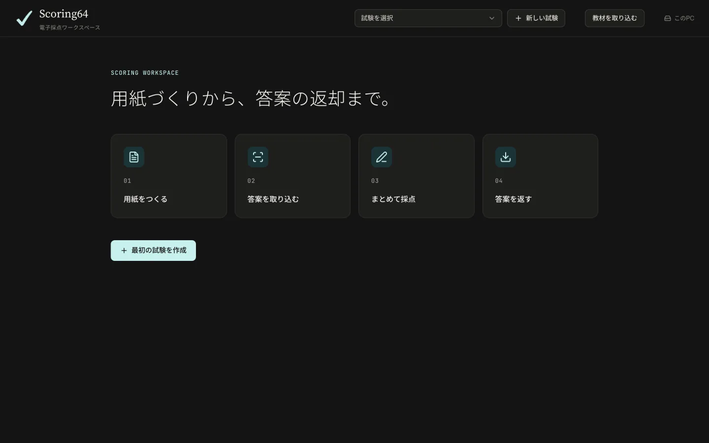

Getting started
Getting started
From the download to grading the sample exam that comes with the app.
The English interface arrives in version 1.2.0, now in final testing. Until it is released, the download is version 1.1.0, which is in Japanese only. Email us and we will tell you when 1.2.0 is out. The button names on this page are the English ones from 1.2.0.
01 · Install
Download and install
Scoring64 runs on Windows and on Macs with Apple silicon. On a Mac, go to Install on a Mac.
Install on Windows
- Download the installer (Scoring64-Setup.exe).
Download Windows 10 / 11 (64-bit) - Open the file and follow the prompts. You do not need administrator rights.
If Windows shows a warning
Because Scoring64 is a new app, Windows may warn you about it. Click through in this order.
If Edge says the file “isn't commonly downloaded”
- …
- Keep
- Show more
- Keep anyway
If opening it shows “Windows protected your PC”
- More info
- Run anyway
Install on a Mac
- Download the Mac version (Scoring64-mac-arm64.zip).
Download Mac with Apple silicon (M1 or later) - Open the zip to get Scoring64.app, and move it to your Applications folder.
- Open Scoring64 from Applications. You do not need administrator rights.
If the Mac shows a warning
Because Scoring64 is a new app, macOS may ask you to confirm it. Go through these steps.
If the first launch says Scoring64 can't be opened because the developer can't be verified
Close the message and open System Settings. Under Privacy & Security, scroll down, click Open Anyway, enter your Mac password, then click Open.
- System Settings
- Privacy & Security
- Open Anyway
- Mac password
- Open
After that it opens normally.
If you are asked for keychain access after an in-app update
- Login password
- Always Allow
This can appear once after an update. Your license keeps working.
02 · First launch
First launch
- Scoring64 opens when the installation finishes. After that, open it from the Start menu or the desktop shortcut; on a Mac, from Applications.
- On both Windows and Mac, Scoring64 opens in its own window, not in a browser. The first launch can take about 30 seconds.
Grading and reading answer sheets work offline, entirely on this computer, and stop when you close the window. Scoring64 goes online only to check for new versions and to set up TeX if you design sheets in the app.


03 · License key
Free tests and license keys
Each computer can grade 2 tests a month with every feature and no limit on students. When the free tests are used up, only grading a new test stops: you can still continue, correct and export tests you have started, design sheets, and view, back up and restore your data. The free tests reset on the 1st of each month, Japan time (JST).
To grade more tests, contact us for a paid license. Click the counter at the top right (2 free tests left this month, for example) or License, then click the This computer's code field and copy all of it.
Send the code to contact@fermion.company with your school or center name. When your key (a long string starting with S64-1.) arrives by email:
- Click the free-tests counter at the top right.
- Copy the whole key from the email and paste it. Line breaks in the middle are fine.
- Click Register. Your exams and grading carry on where you left them.
The counter at the top right shows how many free tests are left this month. A paid key removes the limit. Running out of free tests never deletes your exams or grades.
04 · Try the sample
Try the sample
The app comes with a sample exam you can grade from start to finish. No paper, scanner or key needed; it takes about five minutes. The sample is a Japanese science quiz, but the steps are the same for your own tests.
- Click Try the sample.
- Import the sample answer sheets.
- Bubble questions are graded automatically. Check the answers sent to Needs review.
- Grade the written questions, one student at a time.
- On the Export & backup tab, click Make the return ZIP. You get a ZIP with a marked PDF for each student and a scores CSV that opens in Excel.
The ZIP holds every student's paper. When handing back, give each student only their own PDF from the students folder.
Start over resets the sample as often as you like, and the sample exports without a key. To try one of your own tests, start by preparing the sheet.
05 · Your data
Where your data is kept
Exams, scanned answer sheets and grades are saved in this folder on your computer. They are never sent to an outside server.
%LOCALAPPDATA%\Scoring64\data
The Start menu has a shortcut to the data folder.
On a Mac, they are saved here:
~/Library/Application Support/Scoring64
In Finder, choose Go → Go to Folder and paste this path.
06 · Uninstall
Uninstall
Use the uninstall shortcut in the Start menu, or remove Scoring64 under Windows Settings → Apps.
On a Mac, move Scoring64.app from Applications to the Bin. Your data stays in ~/Library/Application Support/Scoring64.
Uninstalling does not delete the data folder. If you reinstall, you carry on where you left off.
07 · Move to another computer
Move to another computer
- On the old computer, click Back up all exams on the Export & backup tab. Every exam goes into one file (
.scoring64). - Copy that file to the new computer, for example on a USB stick.
- Install Scoring64 on the new computer, send us its This computer's code, and register the key we send for that computer.
- Click Restore from backup and choose the file.
A paid license covers up to five computers in one classroom. For several sites, contact us for a quote. If a computer's code changes because you replaced the computer or reinstalled the system, contact us as well.